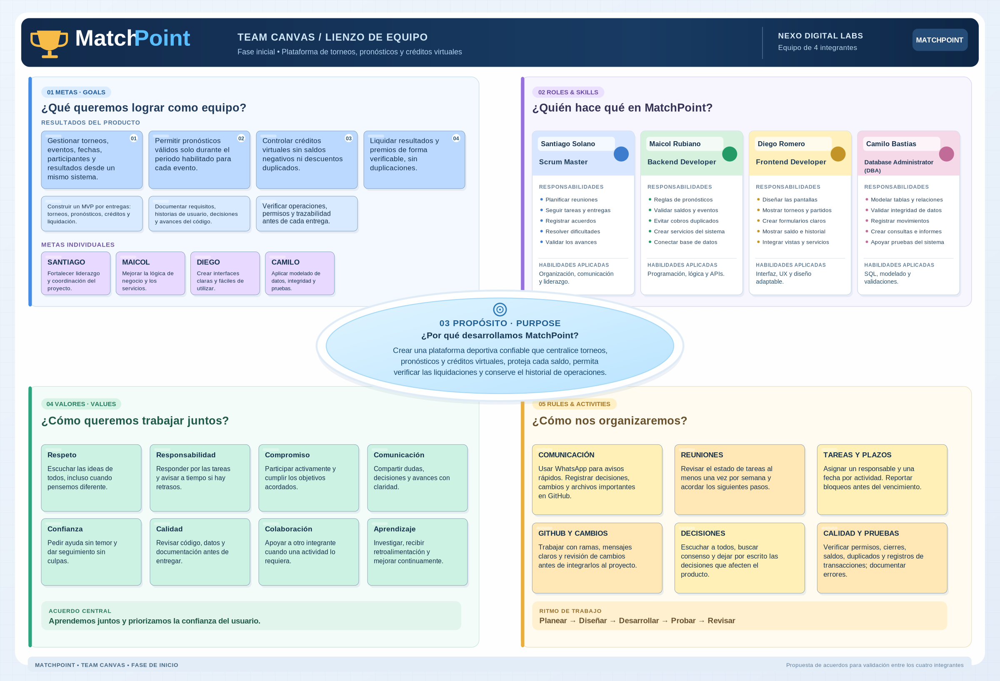
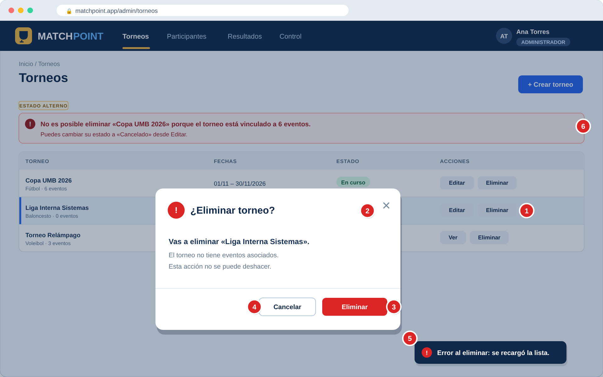

PROL 01
Participante
Consulta torneos y eventos, registra pronósticos, revisa saldo, movimientos e historial.
CASO DE ESTUDIO: NEXO DIGITAL LABS · MATCHPOINT
Documentación de MatchPoint, una plataforma para gestionar torneos deportivos, registrar pronósticos y administrar créditos virtuales con operaciones confiables.
Este sitio es un trabajo de clase de la Universidad Manuela Beltrán y reúne los artefactos solicitados para la fase inicial. Cada uno se puede consultar aquí y descargar en formato editable.
Acuerdos, roles, metas, valores y reglas de colaboración.
Explorar documento ↗ 02Problema, usuarios, propuesta de valor, alcance y objetivos.
Explorar documento ↗ 036 épicas, 20 historias y su distribución en 2 sprints.
Explorar documento ↗ 04Historias priorizadas, paso a paso, mockups y estimaciones.
Explorar documento ↗La manera en que nos organizamos para construir MatchPoint.
Establecemos una forma de trabajar basada en la responsabilidad, la colaboración y la comunicación clara. El lienzo recoge el propósito y los compromisos necesarios para avanzar.
La distribución de roles es una propuesta aceptada para este borrador y debe confirmarse entre los cuatro integrantes. Las metas individuales y reglas son propuestas pendientes de confirmación.
EQUIPO DE DESARROLLO

Una respuesta concreta al problema de gestionar torneos, participaciones y créditos desde herramientas desconectadas.
Desarrollar MatchPoint como una plataforma deportiva confiable y fácil de utilizar, donde usuarios y administradores puedan gestionar torneos, pronósticos, resultados y créditos virtuales con operaciones verificables.VISIÓN MATCHPOINT
Administrar torneos mediante hojas de cálculo y registros manuales dificulta consultar participaciones, comprobar resultados y detectar errores. Las solicitudes repetidas o simultáneas pueden provocar movimientos incorrectos.
MatchPoint reúne los procesos clave y registra los movimientos de crédito de forma consistente, con autorización, reglas de cierre de eventos y liquidaciones verificables.
Consulta torneos y eventos, registra pronósticos, revisa saldo, movimientos e historial.
Crea torneos, programa encuentros, gestiona participantes y publica resultados oficiales.
Verifica liquidaciones, revisa movimientos y atiende inconsistencias según los permisos asignados.
Acceso autorizado y protección de datos.
Programación, participantes y opciones.
Registro dentro del plazo habilitado.
Saldo disponible e historial consistente.
Determinación de aciertos y premios.
Correcciones trazables y revisión de errores.
Organizamos el recorrido del producto en cuatro etapas, seis épicas y doce actividades. Las 20 historias, identificadas desde HU001 hasta HU020, se reparten en dos sprints.
Acceso, participantes, torneos y eventos.
Consulta de eventos y pronósticos.
Saldo inicial, movimientos y ajustes.
Cierre, liquidación y auditoría.
El listado completo del producto, priorizado con MoSCoW y repartido en dos sprints. Busca, filtra y abre cada historia para ver su descripción, el paso a paso de sus criterios de aceptación y su mockup.
| ID | Historia / funcionalidad | Épica | Prioridad | Sprint | SP | Detalle |
|---|---|---|---|---|---|---|
| Cargando historias... | ||||||
Para la revisión con la docente: el backlog se redujo a 20 historias para dos sprints sin quitar los controles críticos. Desde el Sprint 1 se exigen permisos por rol (HU001), privacidad de la información propia (HU010), fecha límite de pronósticos y descuento de créditos sin saldo negativo ni duplicados (HU008). El Sprint 2 completa el ciclo con cierre, resultado, liquidación sin premios duplicados (HU015) y auditoría.
Cada HU usa el formato Identificador, Nombre, Descripción y Criterios de aceptación escritos paso a paso. Su mockup marca con números rojos dónde ocurre cada paso.
| Identificador | HU005 |
|---|---|
| Nombre | Eliminar torneo |
| Descripción | Como administrador quiero eliminar un torneo para retirarlo de la plataforma en caso de que ya no se necesite, siempre y cuando no tenga eventos asociados. |
| Criterios de aceptación | 1Al seleccionar «Eliminar torneo» desde la lista de torneos, el sistema deberá validar si el torneo tiene eventos asociados. |
| 2Si no tiene eventos asociados, el sistema presentará un cuadro de diálogo pidiendo confirmar la transacción. | |
| … y 4 pasos más: confirmar, cancelar, error y torneo con eventos. |

El backlog se reparte en dos sprints; cada uno termina con una entrega demostrable. Las fechas y la duración se acuerdan con la docente.
Tener un recorrido funcional verificable: ingreso por rol, participantes con créditos iniciales, torneos y eventos programados, consulta de eventos y registro de pronósticos con descuento seguro de créditos.
Se entrega cuando: Un participante puede ingresar, ver un evento abierto y registrar un pronóstico que descuenta créditos una sola vez; el administrador puede crear, editar y eliminar torneos y programar eventos.
Cerrar el ciclo del producto: seguimiento y anulación de pronósticos, cierre de eventos, publicación y corrección de resultados, liquidación sin premios duplicados, ajustes autorizados y auditoría.
Se entrega cuando: Un evento puede cerrarse, recibir su resultado oficial y liquidarse una sola vez; los saldos se pueden auditar, conciliar y reportar sin borrar historial.
Los 82 puntos de historia acumulados son estimaciones preliminares; no equivalen a horas. Las historias Could (HU019 y HU020) se toman solo si el Sprint 2 tiene capacidad. La planificación debe socializarse y ajustarse con la profesora.
Como indica la guía, se prepararon cuatro propuestas de mapa con enfoques distintos para que cada integrante las revise antes de consolidarlas formalmente como equipo.
Estado de revisión: estas cuatro propuestas son borradores preparados para validación; no se presentan como evidencia de que cada integrante los haya elaborado o aprobado. La comparación y el mapa grupal también deben revisarse con la docente.
Planificación y recorrido integral
Ruta visual por fases: preparación, participación, liquidación y verificación.
Lógica y transacciones
Enfoque en validaciones, concurrencia, créditos y consistencia de operaciones.
Experiencia del usuario
Enfoque en pantallas, navegación, consultas y claridad de la participación.
Datos y trazabilidad
Enfoque en registros, movimientos, auditoría, reportes e integridad.
Para revisar la fase completa en orden, abre el expediente único. Para evaluar una actividad específica, descarga su PDF independiente.
Documentos PDF, mapas vectoriales y archivos editables para revisar, sustentar y conservar la fase inicial.
Esta documentación está preparada para compartirse por una única URL pública. Desde aquí pueden consultarse las secciones, los documentos PDF, las propuestas individuales y los archivos editables.
Subir todos los archivos y carpetas a la raíz de un repositorio público.
En GitHub, abrir Settings → Pages y seleccionar Deploy from a branch · main / (root).
Comprobar el enlace publicado y entregarlo en el aula virtual.
Material académico de fase inicial. No representa una plataforma MatchPoint implementada. La distribución de tareas, acuerdos grupales, estimaciones y prioridades son propuestas sujetas a revisión por los integrantes y la docente. La guía también plantea construir primero propuestas individuales del mapa, antes de consolidarlas en grupo.
Este proyecto conserva la separación entre los requisitos del enunciado de MatchPoint y las decisiones iniciales de organización tomadas para el ejercicio académico.
Documento de clase: Team Canvas; propuesta individual y consolidación grupal del mapa; Backlog socializado con la docente.
Caso de estudio de Nexo Digital Labs sobre gestión de torneos, pronósticos, créditos virtuales y trazabilidad.
Pendiente de validación grupal: metas individuales, reglas, priorización y revisión personal de las cuatro propuestas del mapa. La documentación está preparada para revisión, no representa la aceptación formal del proyecto por la docente.
Elaborado por Santiago Solano, Maicol Rubiano, Diego Romero y Camilo Bastias. MatchPoint y Nexo Digital Labs corresponden al caso de estudio proporcionado para la actividad. Este sitio presenta documentación de planeación; no es una plataforma operativa ni una página oficial de la universidad o de la empresa.